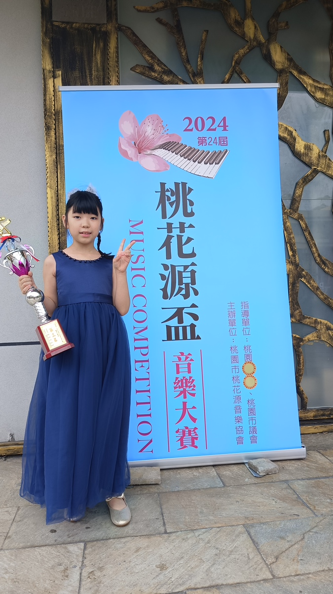

從紅蘋果班的第一個音符，到卡內基音樂廳的舞台 —— 這裡記錄了一段以音樂相伴成長的旅程。
安耘自幼便與音樂結緣。從學齡前進入 Yamaha 音樂教育系統開始，循序走過幼兒到兒童班的團體課程； 之後轉入個別鋼琴課、師從朱若萍老師深入鑽研，並在 2025 年起拓展到管樂領域、學習單簧管。 多年的學習也帶來了一座座比賽獎盃 —— 而比獎項更珍貴的，是她始終樂在其中的那份熱情。
Yamaha 音樂教育系統依孩子的身心成長設計「適齡教育」課程，全國統一教材、循序漸進。 安耘從最小的紅蘋果班起步，循序走過以下各團體班階段，直到兒童班完成。
在音樂遊戲中探索聲音，透過聆聽、歌唱與律動，培養最初的音感與對音樂的喜愛。
在聽覺迅速成長的黃金期，導入聆聽、感受與表現的課程，著重音感與聽力的培育，並開始接觸鍵盤彈奏與看譜。
建立積極自主的學習態度，挑戰與同學合奏，培養專注力與團隊默契，孕育豐富的演奏表現力。完成兒童班後，安耘轉入個別鋼琴課（師從朱若萍老師）繼續精進。
完成 Yamaha 兒童班課程後，安耘轉入一對一個別鋼琴課，師從朱若萍老師（至 2025 年 7 月）， 在老師的指導下深入打磨技巧、詮釋與舞台表現。多年的鋼琴根基， 也成為她在各項鋼琴比賽中屢獲佳績的基礎。演奏實況請見下方的 演奏影片。
2025 年 8 月起，安耘展開了全新的管樂旅程，開始學習單簧管（至 2026 年 6 月）。 從鍵盤到吹管，她體驗了不同樂器的音色、呼吸與表現方式，也讓音樂世界更加開闊。
2025 年 8 月起，安耘加入加州晶晶合唱團，在合唱中體驗與夥伴齊聲歌唱的感動。 2026 年 3 月，她隨團遠赴紐約，登上世界知名的卡內基音樂廳（Carnegie Hall）舞台演出 —— 在這座無數音樂家夢想的殿堂裡，留下了難忘的一頁。
以下為安耘歷年參加音樂比賽的部分獲獎紀錄，獎盃與獎牌實照請見下方「獎盃相簿」。
於全國性公開賽中，與夥伴合作的鋼琴二重奏獲頒優等獎，展現默契與合奏實力。
同屆賽事中再獲銀獎（Second Class）肯定。
主辦單位：桃園市桃花源音樂協會。於鋼琴比賽組獲第三名佳績。
參加 2024 亞洲盃國際音樂大賽，於古典鋼琴獨奏兒童四年級組榮獲第一名。
安耘的部分比賽與演奏實況影片，可直接在下方播放。